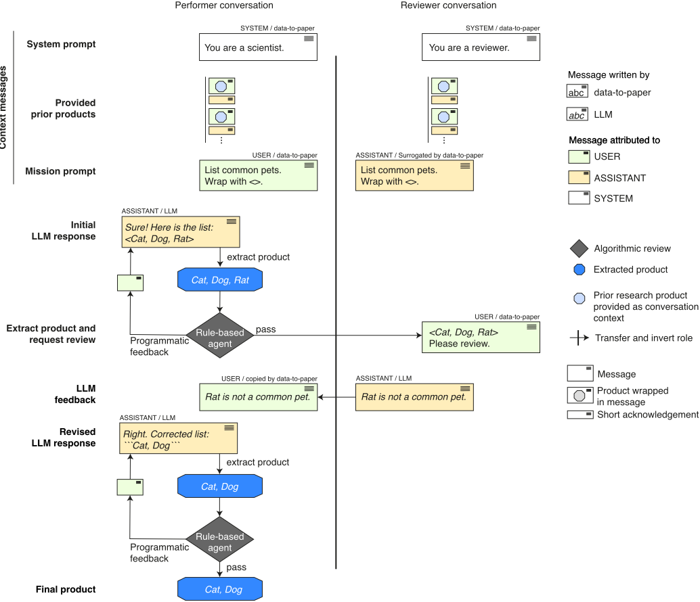
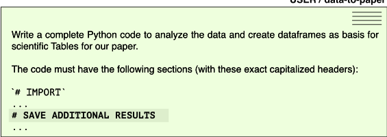
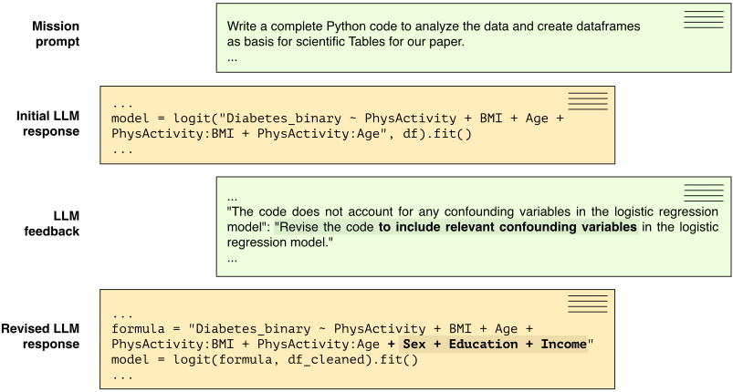
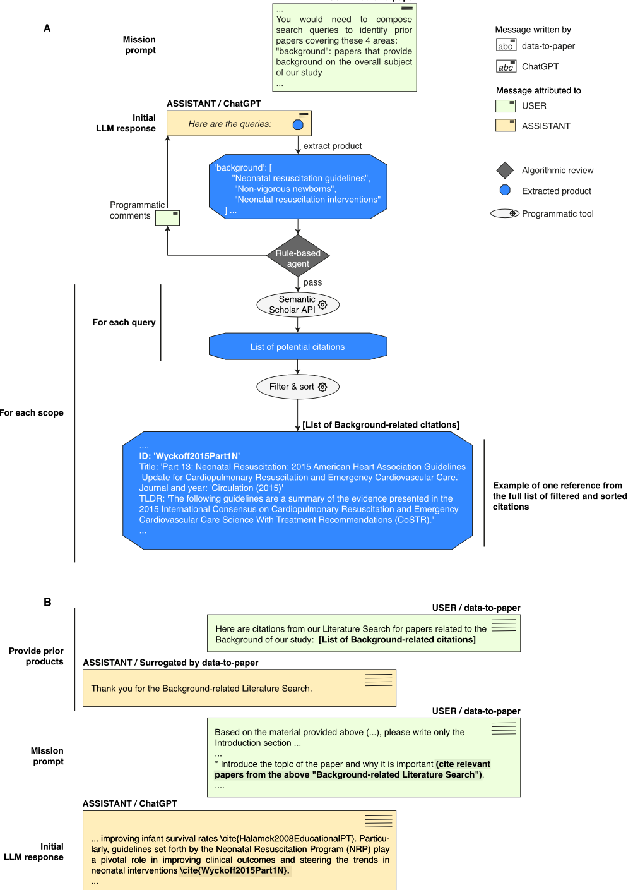
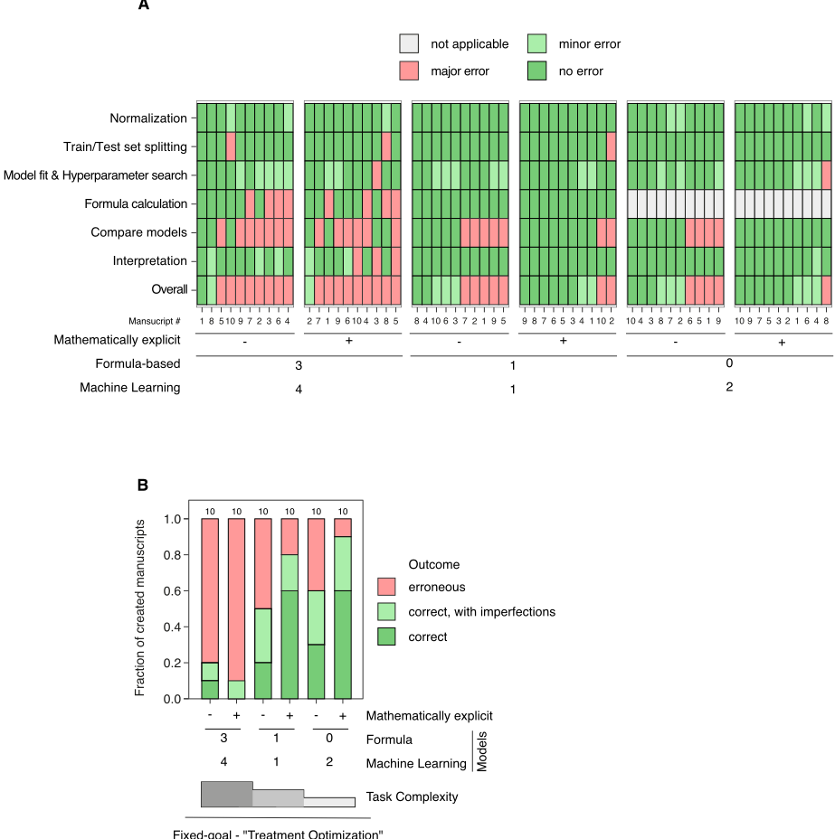

Autonomous LLM-driven research from data to human-verifiable research papers
从数据到可人工验证研究论文的自主 LLM 驱动科研
简介
论文研究完全自主的 LLM 驱动科研是否可行，以及能否满足透明、可追溯、可验证等科学价值。作者构建 data-to-paper 平台，用多个 LLM 与规则 Agent 沿预定义的 17 个研究步骤推进：数据探索、提出假设、制定检验计划、编写并调试分析代码、生成表格、检索文献并逐节撰写论文；每步实现为独立会话，通过受控注入'先验产物'管理上下文，经规则检查与角色反转的 LLM 评审迭代修正，代码另有四层护栏，最终产出数值可超链接回溯至代码行的'data-chained'论文。关键结论：简单目标下全自动模式约 80-90% 无重大错误，宽泛复杂目标错误率达 90%，而每轮 2-3 条单句人工评审即可稳定保证准确性；开源 LLM 无法完成关键步骤。对本团队而言，这是一份多步 Agent 流水线在上下文控制、双层评审与可靠性评测上参考价值很高的工程实践。
问题
验证'仅提供标注数据，LLM Agent 能否全自主完成从提出假设、设计并执行分析、解释结果到写成论文'的完整科研流程，并使过程与产出满足透明性、可追溯性与可验证性；同时系统量化不同任务复杂度下全自动模式的错误率，以及人工协同（co-piloting）对可靠性的作用。
方法
data-to-paper 将科研流程拆为 17 个预定义步骤，每步实现为独立的 Performer 会话：以 system prompt 指定 Agent 身份，注入预定义子集的'provided prior products'作为上下文（严格控制步骤间信息流以减少幻觉），再附步骤专属 mission prompt 要求生成特定类型的研究产物。产物经规则化算法检查（格式、长度、引用正确性等）并反馈迭代修正；部分步骤再经'角色反转'的并行 Reviewer 会话做 LLM 评审。代码步骤设置四层护栏：静态检查、运行时检查、包级护栏、输出校验。文献检索通过 LLM 生成查询词后调用 Semantic Scholar Academic Graph API，避免记忆式幻觉引用。系统逐步骤追踪信息流，为论文中每个数值建立递归超链接（数值→Notes 公式→表格→输出文件→具体代码行），生成'data-chained'可验证论文。支持 autopilot/copilot 两种人机模式与 fixed/open-goal 两种目标模式，并按步骤难度分配 gpt-3.5-turbo/gpt-4、失败时自动升级模型。
关键结果
Open-goal 模式在 2 个公开数据集各跑 5 次共 10 篇论文：8 篇分析正确仅有措辞瑕疵，2 篇存在根本性分析或解释错误；每个完整研究周期约 1 小时
Fixed-goal 复现 Saint-Fleur et al.（challenge 1）：10 篇全部正确复现分析，8 篇总体结论正确且同时恰当报告正负结果，2 篇出现解释错误（其中 1 篇影响总体结论）
Fixed-goal 复现 Shim et al.（challenge 2）：原始宽泛目标下错误率 90%，仅减少待比较模型数量的更窄目标下错误率降至 10-20%；完成 Data Analysis 步骤所需的规则反馈迭代次数随任务广度增加，可作为任务复杂度的代理指标
Human co-piloting：每轮仅 2-3 条单句评审意见（通常在代码编写步骤）即可在更复杂目标下稳定产出准确论文
LLM 对比：gpt-3.5-turbo 与 gpt-4 在 1-3 轮编码反馈内收敛（中位数 1 轮）；Llama-2-7B 在 20 轮上限内从未收敛，CodeLlama-34B 仅 1 次经 8 轮收敛，Llama-2-70B 仅 4/10 次经 13-18 轮收敛；Llama-2-70B 在 10 次 Research goal 步骤中全部幻觉出不存在的数据集特征，gpt-3.5-turbo 无此问题
生成的 data-chained 论文中，每个被引用数值经超链接递归链回生成它的具体代码行，支持程序化验证
创新点
区别于以往将 LLM 用于数学解题、代码项目或长文写作的工作，本文把提示自动化、工具增强与多 Agent 交互组合成覆盖'数据→假设→代码→结果→成稿'完整科研路径的端到端系统；核心新意在于程序化信息回溯：通过逐步骤信息追踪与 \num 公式语法生成'data-chained'论文，使每个数值可递归验证到代码行，把可验证性做进产出本身；同时将规则检查、角色反转的 LLM 评审与人工 co-pilot 整合为分层质量保障，并系统量化了任务广度与错误率、人工介入收益之间的关系。
团队参考意义
相关度级别：high
命中能力域：3.1 上下文工程与记忆 | 3.2 提示工程 | 3.3 Agent 架构与工具使用 | 3.4 多智能体协作 | 3.5 评测与可靠使用
理由：论文虽以科研自动化为场景，但其工程内核与本团队五个能力域几乎全部直接对应：3.1——每步独立会话加白名单式'provided prior products'的上下文组织、超限时裁剪旧反馈消息、按 token 上限切换 16k 模型；3.2——逐步骤迭代式提示设计、格式约束、失败后补充细节与 one-shot 示例；3.3——Agent loop 与 harness 设计、代码执行与 Semantic Scholar API 工具调用、针对常见编码/统计错误的四层护栏；3.4——Performer 与 Reviewer 角色反转消息传递的双 Agent 评审交互；3.5——以错误率为核心的量化评测、以反馈迭代次数作为复杂度代理、人机协同工作流与按步骤难度分级选模型的成本控制。这些模式可直接迁移到团队的代码生成/审查、文档生成与测试辅助等自动化流水线。
建议动作：深入精读并做内部分享
中文全文
Autonomous LLM-driven research from data to human-verifiable research papers
自主大语言模型（LLM）驱动的研究：从数据到可人工验证的研究论文
Tal Ifargan 1,* ，Lukas Hafner 2,* ，Maor Kern 3 ，Ori Alcalay 3 与 Roy Kishony 2,4,5
1 以色列理工学院数据与决策科学学院，以色列海法。
2 以色列理工学院生物学院，以色列海法。
3 Epsio，以色列特拉维夫。
4 以色列理工学院计算机科学学院，以色列海法。
5 以色列理工学院生物医学工程学院，以色列海法。
Abstract
尽管人工智能（AI）有望加速科学发现，但完全由 AI 驱动的研究是否可行，以及它能否恪守透明性、可追溯性与可验证性等关键科学价值，仍不明确。我们模仿人类的科学实践，构建了 data-to-paper——一个自动化平台，它引导相互交互的大语言模型（LLM）Agent 完成完整的分步研究流程，同时以程序化方式回溯信息流，并允许人类监督与交互。在自动驾驶（autopilot）模式下，仅提供带注释的数据，data-to-paper 便提出了假设、设计了研究方案、编写并调试了分析代码、生成并解释了结果，并创建了完整且信息可追溯的研究论文。尽管研究的新颖性相对有限，该流程展示了从数据中自主生成全新（de novo）定量洞见的能力。对于简单的研究目标，完全自主的循环所创建的稿件约有 80-90% 能够在不出现重大错误的情况下复现已发表的同行评审论文；但随着目标复杂度的增加，人类协同驾驶（co-piloting）对于确保准确性变得至关重要。除流程本身之外，所创建的稿件也具有内在的可验证性，因为信息追踪能够以程序化方式将结果、方法与数据串联起来。因此，我们的工作展示了 AI 驱动加速科学发现的潜力，同时增强而非损害可追溯性、透明性与可验证性。
Introduction
自然语言处理（natural language processing）的最新进展催生了诸如 ChatGPT 等大语言模型（LLM），它们能够以人类水平撰写文本、回答问题并生成代码（ 1 - 5 ）。此外，通过外部工具对 LLM 进行增强，并将迭代式算法提示（prompting）与多智能体（multi-agent）交互自动化，使得应对更加复杂的多步骤任务成为可能，例如求解数学问题（ 6 - 8 ）、大型代码项目的编写与调试（ 9 , 10 ），以及创作长达整本书的文本和剧本（ 11 ）。最近，LLM 甚至展现出设计与运行实验以及执行临床诊断的能力（ 12 - 14 ）。然而，尽管取得了上述种种进展，科学研究——尤其是从数据中从头（de novo）创建洞见——仍然是人类智慧与独创性的堡垒（ 15 - 20 ）。人工智能（AI）的最新发展引发了关于其在科学中应用的潜力与风险的热烈讨论（ 21 ），并催生了新兴的指导原则，这些原则强调问责性、监督与透明度等关键价值的重要性——而这些价值在 AI 中向来是出了名地难以实现（ 22 ）。
开展研究并将结果与结论汇编成一篇透明、方法学上可追溯且可验证的科学论文，是一项极具挑战性的任务，涉及多个相互关联的步骤，需要规划、推理与演绎，以及对信息的细致追踪。尽管科学家在原则上可以循着无数条富有创造性的路径走向发现，但某些常规的研究路径已经形成（ 23 ）。具体而言，这类路径通常遵循以下几近经典的步骤：结合文献提出并重塑研究问题、设计并执行研究计划、在既有知识的背景下解读结果，以及撰写研究论文。除了既有的多步骤结构之外，由人类驱动的科学过程还具有三个额外的关键特征。首先，该过程并非线性，它常常需要迭代式地回退到较早的步骤。其次，它建立在对各步骤之间文本信息与定量信息的严格追踪与控制之上。最后，在每一个步骤中，人类科学家都依赖来自同行、导师或外部审稿人的反馈，从而形成超越个人能力的整体集体力量。综上所述，这些关键特征使科学成为一个独特的人类创造性过程。
受人类科学家开展研究方式的启发，我们构建了 data-to-paper——一个自动化平台，它系统地引导多个大语言模型（LLM）智能体和基于规则的算法智能体完成科学研究的常规步骤，并配备自动化反馈、迭代式的评审与修订循环，以及对这些研究步骤之间信息流的结构化控制与追踪。我们特别关注相对简单且定义明确的假设检验研究流程。该流程从人类提供的数据集出发，旨在提出假设，编写、调试并执行代码以分析数据和进行统计检验，解读结果，并撰写结构良好的科学论文；这些论文不仅描述结果与结论，还透明地阐明研究方法，使人类科学家能够理解、重复并验证该分析。关于 AI 驱动科学新兴准则的讨论（ 22 ）为 data-to-paper 提供了设计框架，由此形成了一个完全透明、可追溯且可验证的工作流，并对数据、方法与结果进行算法化的“串联”，使得能够将下游结果回溯至生成它们的代码部分。该系统可以在有或没有预定义研究目标的情况下运行（固定目标/开放目标模式），也可以在有或没有人类交互与反馈的情况下运行（协同驾驶/自动驾驶模式）。我们在不同的公开数据集（ 24 - 27 ）上开展了两个开放目标和两个固定目标的案例研究，并对 AI 驱动的研究流程以及所创建科学论文的新颖性与准确性进行了评估。我们表明，在完全自主运行（自动驾驶）的情况下，data-to-paper 能够针对简单目标完成完整且正确的运行循环；而对于复杂目标，人类协同驾驶则变得至关重要。
Implementation
为了自主分析所提供的数据集并创建研究论文，data-to-paper 引导多个大语言模型（LLM）智能体和基于规则的智能体完成一系列预先定义的“研究步骤”（research steps），其中每一步都旨在生成明确定义的定量或文本类“研究产物”（research products）（Fig. 1）。该流程包括以下步骤：数据探索、文献检索以及研究目标与假设的迭代制定、创建假设检验计划、编写数据分析代码、创建科学表格、检索相关文献，以及逐节撰写论文（Fig. 1A；Fig. 1B，顶部；共 17 个步骤）。研究目标也可以由人类作为输入提供，在这种情况下，确定目标的步骤将被跳过（“固定目标模态”（Fixed-goal modality），虚线旁路箭头，Fig. 1A；Methods）。该流程自动依次执行这一系列步骤（由人类进行监督与批准；Methods），每一步生成一个或多个不同类型的研究产物（“自由文本”（Free text）、“LaTex 文本”（LaTex text）、“结构化文本”（Structured text）、“二元决策”（Binary decision）、“引文”（Citations）、“Python 代码”（Python code）和“数值数据”（Numerical data）；Fig. 1B，左侧）。在编码步骤中，LLM 创建 Python 代码，随后由 data-to-paper 执行该代码，以分析所提供的数据集并生成数值数据产物（例如论文中的表格；Methods）。在文献检索步骤中，利用 LLM 生成的结构化查询列表从外部引文数据库（ 28 ）中检索引文列表（Fig. 1A；Methods）。最终，这些中间产物被自动组装成一篇完整的研究论文（为保持透明，论文标注有 AI 创建的水印；Fig. 1B；Methods）。
每一个研究步骤都被实现为一段独立的对话，其中包含 Agent 身份的设定、先前研究产物的提供、任务指令，以及带有迭代反馈的大语言模型（LLM）响应（图 1C；Methods；图 S1）。首先，为 LLM Agent 指定一个特定身份（Methods；例如“你是一位需要撰写文献检索查询的科学家”；"Performer system prompt"，表 S1）。接下来，data-to-paper 会用一组“提供的先前产物”（provided prior products）填充对话，即通过一系列消息向 LLM 提供先前步骤研究产物中一个预先定义的子集，这些产物被认为对当前任务十分重要（图 1B；图 S1；"Provided prior products"，表 S1）。这种对步骤间信息流的严格管控，最大限度地减少了因相关信息与无关信息混杂而可能产生的幻觉（ 29 ）。它还使 data-to-paper 能够追踪、验证并串联 LLM 所引用数值结果的来源（Methods）。接下来，追加一条针对该步骤的“任务提示”（mission prompt）消息，用于定义 LLM 应当创建的新产物（例如“请撰写文献检索查询……”；"Performer mission prompt"，表 S1）。然后，data-to-paper 向 LLM 模型 API（ 30 - 32 ）请求响应，并从中提取所请求的产物（基于预定义的格式；图 S1；表 S1；Methods）。提取出的产物随后会经过一系列基于规则的算法检查，一旦检查失败，便会向 LLM 提供建设性反馈（Methods；图 1C；图 S1）。特别地，为了尽量减少编码步骤中的错误，我们构建了一个独特的框架，通过一系列静态代码检查、运行时错误检查、针对特定软件包的护栏以及输出验证，为常见的编码与统计分析错误设置护栏（图 1A 的"Coding"模块；Methods）。
当所创建的产物通过基于规则的审查后，还可以通过 LLM 审查（ 9 , 33 - 38 ）进一步加以完善（图 1A 中带有"Review"椭圆的步骤；Methods）。LLM 审查被实现为一段并行的、角色反转的对话，实际上在两个 LLM Agent 之间形成了一次交流（Methods；图 1C；图 2A；图 S2）。在协同驾驶（co-pilot）模式下，人类用户可以提供额外的审查意见，从而引发进一步的 LLM 迭代（Methods）。一旦产物通过了基于规则的审查、LLM 审查以及可选的人类审查，该步骤即告结束，data-to-paper 随即进入下一步骤，直至所有产物均被创建并组装成论文。虽然 data-to-paper 可以与任何 LLM 配合使用，但在实践中，我们的实现采用的是 ChatGPT；使用当前最先进的开源 LLM 会导致频繁的错误，以致无法完成完整的研究循环（Methods；表 S2；图 S3）。值得注意的是，由于 ChatGPT 并非确定性模型，data-to-paper 的每一次运行——即使是在同一数据集上、且无论是否有人类给定的目标——都会以不同的分析展开，从而产生不同的整体稿件。
Open-goal research on public datasets
在开放式目标（open-goal）、自动驾驶（autopilot）模式下运行时，我们为 data-to-paper 提供了两个公开可用的数据集：( i ) “健康指标”（Health Indicators）数据集 ( 24 )，即美国疾病控制与预防中心（CDC）2015 年行为风险因素监测系统（BRFSS）的一个未加权精选子集 ( 39 )，包含 253,680 条干净的应答，每条应答包含与糖尿病和总体健康相关的 22 个特征；以及 ( ii ) “社交网络”（Social Network）数据集 ( 25 )，这是一个有向图，表示美国第 117 届国会议员之间的 Twitter 互动以及议员的所属信息（议院、政党和州）。对于这两个数据集，我们各自运行 data-to-paper 进行了 5 个完整的研究循环，共创建了 10 篇不同的稿件（补充数据集 A、B；补充数据描述 A、B；补充稿件 A1-5、B1-5）。在这些每个耗时约一小时的研究循环中，data-to-paper 生成并修正假设、编写并调试代码、构建搜索查询并检索引用文献，并逐节撰写和修改稿件（完整对话见补充运行记录 A1-5、B1-5；图 2B；图 S4-S7）。所有生成的稿件都恰当地遵循了研究论文的规范结构，包括恰当的标题和摘要、一段结合相关文献强调研究问题的表述完善的引言、一个以透明且人类可追溯的方式描述分析过程和关键方法的方法部分、若干提供全部自定义编写代码的补充部分、格式规范的科学表格、一个在描述发现的同时恰当引用每个表格的结果部分，以及一个带有参考文献、总结结果、阐明局限性并将发现置于更广阔背景中的讨论部分（补充稿件 A1-5、B1-5）。虽然结构相似，但针对每个数据集生成的 5 篇不同论文涉及了不同的主题，提出并检验了不同的假设（表 1，表 S3）。这些论文并不具有高度的创造性，但它们确实定义了一组合理的假设，用简单直接的统计方法对其进行检验，并最终从所提供的数据中创造出全新（de novo）的见解并予以充分报告。
通过人工审查这些论文的数据分析和文本，我们发现在这 10 篇开放目标论文中，有 8 篇报告了正确的分析，仅存在轻微的措辞瑕疵，但有 2 篇存在错误，表现出根本性的分析或解释错误（补充稿件 A1-5、B1-5）。全部 5 篇“健康指标”论文的分析均基于逻辑回归或线性回归模型，都得到了充分执行，同时合理地考虑了混杂因素的选择（表 S4）。此外，在需要时恰当地加入了交互项，并且数据集也被适当地加以限定以反映所检验的假设（限定于糖尿病亚人群；表 S4）。对于“社交网络”数据集，论文的基础是将图属性与节点属性相关联，以及创建新的节点属性（例如 State representation size），然后视情况对图的节点或边应用线性回归、方差分析（ANOVA）或卡方检验（表 S4；参见所创建各论文的方法部分和分析代码，补充稿件 A1-5、B1-5）。在全部 10 篇论文中，生成的科学表格都正确地呈现了分析结果。在审查文本时，我们观察到 data-to-paper 能够以符合事实的陈述充分解读分析结果，正确地引用表格并援引分析中的关键数值，并在现有文献的背景下合理地描述研究问题和发现（绿色高亮，补充稿件 A1-5、B1-5；Methods）。我们还发现了多处瑕疵，例如空泛的措辞、对新颖性的夸大，以及引用选择不当、有时甚至缺失引用（黄色和橙色高亮，补充稿件 A1-5、B1-5）。在这 10 篇论文中，有 2 篇存在更严重、影响结果的错误：在其中一篇“健康指标”论文中，由于目标设定步骤中的幻觉，正确的分析被错误解读，导致得出了超出分析范围的结论；而在其中一篇“社交网络”论文中，执行了错误的分析，导致对社会互动与党派归属之间的统计关联作出了毫无根据的陈述（红色高亮，分别为补充稿件 A2 和 B2）。
Estimating reliability in reproducing peer-reviewed results
为了更系统地评估 data-to-paper 在自动驾驶（autopilot）模式下的错误率，我们在两个案例研究中以固定目标（fixed-goal）模式应用了 data-to-paper，这两个案例研究均有已发表的同行评审结果作为基准（benchmark）。我们特别希望检验与分析结果和解读可靠性相关的两个关键方面：对阳性结果和阴性结果的恰当报告（挑战 1），以及在包含多个不同步骤且广度可调的任务中的表现（挑战 2）。为检验 data-to-paper 在这两个挑战上的能力，我们选择了以下两项同行评审研究作为示例：Saint-Fleur 等人的研究（ 26 ），该研究充分报告了新生儿重症监护室（Neonatal Intensive Care Unit）政策变更分别与治疗选择和治疗结局之间关联的阳性结果和阴性结果（挑战 1）；以及 Shim 等人的研究（ 27 ），该研究构建了多个用于预测儿科患者最佳插管深度的机器学习（Machine Learning）模型，并将其预测准确率与基于公式的模型进行比较，因此需要多个分析步骤，而这些步骤的广度可以逐步调整（通过改变待比较模型的数量；挑战 2）。这两项研究都提供了标注完善的数据集，且均发表于我们所使用的 ChatGPT 模型的知识截止日期（2021 年 9 月；方法部分）之后。对于这两个案例研究中的每一个，我们都向 data-to-paper 提供了原始出版物的研究目标和相应数据集，并运行了 10 个独立的研究周期（补充数据描述 C,D；补充数据集 C,D；表 S5,S6；补充稿件 C1-10, Da1-10）。在每个案例研究内部，所生成的论文在内容、术语和结构上彼此相似。事实上，通过计算所有生成稿件标题和摘要的向量嵌入（vector embeddings）之间的两两余弦距离来量化内容相似度，结果显示出与 4 个案例研究（两个开放目标、两个固定目标）相对应的紧密且相互区分的聚类（图 3）。此外，固定目标论文在内容、术语和向量嵌入方面也与其各自的原始研究（ 26 , 27 ）相似（图 3）。
我们人工审查了为两项研究复现挑战所生成的稿件的分析过程和所报告的结果。对于挑战 1，我们发现所有论文都正确复现了分析，其中 8 篇得出了总体正确的结论，并充分报告了阴性结果和阳性结果。所有这些稿件都采用了恰当的统计方法，或与原始研究（ 26 ）中使用的方法一致，或提供了有效的替代方法（表 S5；补充稿件 C1-10，补充运行 C1-10）。然而，尽管分析正确，我们仍在这 10 篇论文中的 2 篇中发现了解读错误，其中一篇论文的解读错误还影响了总体结论（图 4；补充稿件 C1、C2，红色和橙色高亮；表 S5、S6）。在挑战 2 中，我们发现错误率随分析广度而发生关键性变化；当面对原始的、宽泛的研究目标时，data-to-paper 经常失败（错误率 90%），而对于除要求更少模型之外几乎完全相同的研究目标，它能够正确完成这种多步骤的模型开发研究（错误率 10-20%；图 4）。我们注意到，随着任务广度的增加，完成 Data Analysis 步骤所需的迭代次数也随之增加，这为警示过于复杂的分析和困难的目标提供了潜在可能（图 4，底部）。我们进一步注意到，在所有情况下，流程的可靠性都取决于研究目标的表述方式和数据集的描述；不够详细和明确的表述可能会增加分析错误（图 S8；补充稿件 Dai1-10、Dbi1-10、Dci1-10 以及数据描述 Dai、Dbi、Dci）。最后，允许人类协同驾驶（human co-piloting，Methods），即每次运行提供 2-3 条单句评审意见（通常在代码编写步骤），使得即使面对更复杂的目标也能持续创建出准确的论文（图 4；补充人类协同驾驶稿件 1-3）。总而言之，这些案例研究提供了对 data-to-paper 分析与解读可靠性的评估，表明对于简单的研究目标，它能够在 80-90% 的情况下自主创建可靠的稿件，而对于更复杂的目标，人类协同驾驶对于确保可靠性至关重要。
最后，考虑到人工审查与验证所生成稿件的工作量及其必要性，我们利用 data-to-paper 的逐步信息追踪机制，通过经算法验证的超链接，将所生成稿件中的结果、方法论与数据串联起来（见“方法”部分）。通过这种方法生成的稿件中，所有被引用的数值均以递归方式链接到生成这些数值的具体代码行。具体而言，稿件中引用的数字被链接到一个"Notes"附录，其中提供了该数字的计算公式及其解释；再由此链接到公式中所用数值来源的具体表格；从表格再链接到生成该表格的代码的相应输出文件；再由此链接到产生该输出文件的代码中非常具体的部分（可点击的超链接见补充“数据链式稿件”A-D）。这种数据链式稿件有助于对论文进行系统性审查，为即将到来的 AI 驱动研究时代树立了可追溯性的新标准。
Discussion
受人类研究关键特征的启发，我们采用提示自动化、工具增强和多智能体交互方法 ( 9 , 12 , 33 )，引导多个大语言模型（LLM）Agent 走完从标注数据到结构良好、透明且可由人类验证的论文的完整研究路径。通过在不同研究步骤之间追踪信息，data-to-paper 能够创建“数据链式”稿件，其中结果、方法与数据以程序化方式相互链接。尽管这种 AI 驱动研究的新颖性远落后于高端的当代科学，但它确实展示了从所提供数据中从头创造新见解的能力，从而重现了人类研究的一个关键方面，并使科学自动化远远超越了算法化数据探索所能达到的水平 ( 41 )。此外，该流程在数据类型和研究领域方面展现出通用性，能够产生不同形式的科学输出，例如关联研究、网络分析，或机器学习模型的开发与测试。然而，该流程在完全自主运行时并非没有错误；尽管通过多重防护栏（guardrails）、算法检查、评审循环以及对信息流的严格把控将错误降至最低，但 LLM 幻觉（hallucination）这一臭名昭著的问题 ( 29 ) 仍导致在简单分析任务中约 10% 至 20% 的所生成论文出现根本性错误，而对于更复杂的任务则导致持续失败。在整合人类协同辅助（human co-piloting）后，即使对于复杂任务，少量简短的评审意见也足以克服这些错误。我们当前的实现存在多项限制：它仅限于文本和表格输出，无法提出并跟进后续问题，且仅限于假设检验型研究。
尽管存在这些当前的局限性，大语言模型（LLM）开展科学研究的能力带来了重要机遇，同时也带来了重大挑战。事实上，这类 AI 研究方法能够在一小时内从数据出发从零创建研究论文，可以极大地加速科学进程的步伐。然而，这一发展也伴随着风险，例如对这类系统的不诚实使用，如 P-hacking（42），或者用解决无关紧要问题的中等水平且内容泛泛的稿件使发表系统不堪重负（43-45）。我们的方法实现了若干特定功能以缓解其中一些风险，这与新兴的科学领域 AI 使用指南（22）相一致，包括允许人类协同驾驶的透明、可监督的流程，无论结果为正面还是负面均进行无偏报告，以及创建透明的、带有 AI 标记的、“数据链式”且人类可验证的论文。鉴于 AI 驱动研究的新颖性相对有限且存在出错的可能，以及伦理判断和问责的需要（22），我们预期并敦促将这类 AI 驱动的方法用作科学家的副驾驶（co-pilot），帮助科学家完成较为直接的任务，从而使他们能够将心思和创造力集中于更高层次的概念。
Methods
数据集。我们使用了 4 个数据集，每个数据集由数据文件（'Data'，图 1B；补充数据集 A-D）和元数据条目（人工提供的产物 'Data file description' 与 'General description of dataset'，图 1B；补充数据描述 A-D）组成。(A) 'Health Indicators' 数据集 ( 24 )。这是美国疾病控制与预防中心（CDC）行为危险因素监测系统（Behavioral Risk Factor Surveillance System, BRFSS）2015 年年度数据集 ( 39 ) 的一个干净的无加权子集，从 Kaggle ( 24 ) 下载。它包含 253,680 条调查应答，每条应答具有 22 个与糖尿病及各种健康指标相关的特征，且无缺失值。未对数据集做任何改动；提供给 data-to-paper 的是从 Kaggle 下载的原始 csv 文件。(B) 'Social Network' 数据集 ( 25 )。第 117 届美国国会议员之间 Twitter 互动的有向图 ( 25 )。向 data-to-paper 提供了两个数据文件：( i ) 一个 csv 文件，包含有向无权边的列表，表示国会议员之间的 Twitter 互动（从斯坦福网络分析项目（Stanford Network Analysis Project）( 46 ) 下载，并去除了权重）；( ii ) 一个 csv 文件，包含每位议员的所属信息，包括其议院（Chamber）、政党（Party）和州（State）（从 FRAC ( 47 ) 下载）。(C) 'Treatment policy' 数据集（用于复现 Saint-Fleur 等人 ( 26 ) 的测试用例）。一个关于入住新生儿重症监护病房（NICU）的无活力（non-vigorous）婴儿在治疗指南变更实施前后治疗与结局的数据集。作为 data-to-paper 的输入，将从 Saint-Fleur 等人 ( 26 ) 下载的文件转换为 csv 文件，并进行了少量清理：将列标题转换为字母数字名称，将字符串形式的二值转换为整数形式的二值，并删除了以下无关列：'RACE'、'RACE IN TWO CATEGORIES'、'ETHNICITY'、'Singleton /Multiple'、'Maternal Diabetes…'、'PRETERM VS TERM'、'ROUTINE RESUSCITATION…'、'Respiratory Support'、'Exposure to xrays'、'X-Ray finding'（若不删除这些列，data-to-paper 的 'Data exploration' 步骤偶尔会生成过大的输出文件，从而超出 ChatGPT 的 token 限制）。(D) 'Treatment Optimization' 数据集（用于复现 Shim 等人 ( 27 ) 的测试用例）。一个包含 967 名儿科患者的数据集，这些患者在接受手术后接受了机械通气，数据集包括基于 X 射线确定的最佳气管插管深度，以及一组用于机器学习和基于公式的模型来预测该最佳深度的个性化患者属性。作为 data-to-paper 的输入，我们删除了无关列，仅保留原始研究中使用的列：'tube'、'sex'、'age_c'、'ht'、'wt'、'tube_depth_G'。对于数据集 C 和 D，我们还向 data-to-paper 提供了各自原始研究的研究目标。研究目标和数据集描述是通过一个迭代且经验性的过程制定的：我们与 ChatGPT 商讨最佳措辞和术语，在试运行中进行测试，识别误解以及模糊或定义不明确的表述，并据此调整描述。所有数据集的数据集描述和文件描述，以及数据集 C、D 的研究目标，均提供于补充数据描述 A-D 中。
data-to-paper 的执行。对于每次运行，data-to-paper 被提供一个数据集、其相关联的元数据以及一个可选的研究目标，并自动按步骤推进研究流程（图 1A,B）。在开放目标（open-goal）模式下，data-to-paper 贯穿整个研究流程（图 1A,B）。在固定目标（fixed-goal）模式下，研究目标被提供，选择研究目标的步骤被跳过（“固定目标模式”，图 1A）。人机交互被实现为在每个研究步骤进行简单的用户批准（自动驾驶（autopilot）模式；用户仅负责监督），或通过交互式应用进行完整的人工审查（副驾驶（co-pilot）模式；用户可在每个步骤提供审查意见）。对于每个数据集，我们进行了多次 data-to-paper 运行，具体如下。(A) "Health Indicators" 数据集。我们以开放目标模式使用该数据集及其相关联的元数据运行 data-to-paper，共 5 个完整研究周期（补充运行与稿件 A1-5）。在监督该过程时，当观察到所选的研究目标（Research goal）与先前研究周期的目标过于相似时，我们在“目标验证（Goal validation）”步骤之后中止并重启了第 5 次运行，共 3 次。(B) "Social Network" 数据集。我们以开放目标模式使用该数据集及其相关联的元数据运行 data-to-paper，共 5 个完整研究周期（补充运行与稿件 B1-5）。为尽量减少重复运行中目标的重叠，先前已选定目标的列表被作为“研究目标（Research goal）”步骤“任务提示（mission prompt）”的一部分呈现。(C) "Treatment Policy" 数据集。我们以固定目标模式使用该数据集及其相关联的元数据和研究目标运行 data-to-paper，共 10 个研究周期（补充运行与稿件 C1-10）。(D) "Treatment Optimization" 数据集。我们以固定目标模式使用该数据集及其相关联的元数据和研究目标运行 data-to-paper，共 10 个完整研究周期（补充运行与稿件 Da1-10）。随后，我们使用 5 个修改后的研究目标（补充数据描述 Db、Dc、Dai、Dbi、Dci）运行 data-to-paper，每个目标运行 10 次（补充运行与稿件 Db1-10、Dc1-10、Dai1-10、Dbi1-10、Dci1-10）。由于这额外的 50 次运行仅用于标注分析失败，我们在“标题与摘要（Title & abstract）”步骤之后将其终止（以节省不必要的 API 调用）。此外，我们以副驾驶（co-pilot）模式针对原始目标运行了 data-to-paper 三次（补充数据描述 Da）。在每次这样的运行中，我们都提供了若干审查意见，通常是在代码编写步骤（补充人工副驾驶运行 1-3）。
data-to-paper 实现概述。我们将 data-to-paper 实现为一个由研究步骤构成的链式列表，每一步都旨在基于所提供的先前研究产品子集来创建一个或多个研究产品（图 1A,B）。每个这样的研究步骤都被实现为一个独立的“Performer conversation”（执行者对话），其中指定了大语言模型（LLM）身份、相关的先前研究产品，以及一个步骤特定的“mission prompt”（任务提示），要求 LLM 创建焦点产品。从 LLM 响应中提取出的产品会经过基于规则的审查，并会将请求修正的程序化反馈发回给 LLM。对于某些研究步骤，一旦产品通过了基于规则的审查，还可以将其送去进行 LLM 审查，该审查在一个并行的“Reviewer conversation”（审查者对话）中实现（分别对应图 1A,C 中的 'Review' 与 'LLM reviewer agent'）。研究步骤以一个同时通过了基于规则审查和基于 LLM 审查的最终产品而告终。当所有步骤完成后，便从所有相关步骤的产品中组装并编译出手稿。
提示设计。data-to-paper 在各研究步骤中使用的提示（prompt）列于表 S1 中。这些提示是通过迭代式、经验性的过程设计的。首先，我们为每个提示设计了初始版本，聚焦于其焦点任务的关键方面（表 S1 中的深棕色文本）。此外，我们在每个提示中加入了针对研究产品的格式化指令（表 S1 中的浅蓝色和红色文本）。随后，我们通过多次试运行测试了 ChatGPT 的响应，识别出错误或不充分的响应，并以额外的细节和规格说明对提示进行调整（表 S1 中的浅棕色文本）。在 ChatGPT 仍无法始终如预期作出响应的情况下，我们还加入了单样本（one-shot）示例（表 S1 中的绿色文本）。
消息类型。对话中的消息被指定为 SYSTEM、USER 或 ASSISTANT 三种类型之一（依照 OpenAI API 术语 ( 30 )）。SYSTEM 和 USER 消息由 data-to-paper 以程序化方式构建。ASSISTANT 消息由 LLM 创建。我们还实现了代理 LLM 的 ASSISTANT 消息（LLM-surrogating ASSISTANT messages），即由 data-to-paper 以程序化方式创建、但被归属于 ASSISTANT 的消息（也就是说，在 LLM 看来它们仿佛是由 LLM 自己创建的）。
11
Performer 对话。在每个研究步骤开始时，都会启动一个独立的 Performer 对话，并以程序化方式为其预填充一系列“上下文消息”（context messages）：( i ) 定义 performer LLM agent（大语言模型智能体）身份的“系统提示”（system prompt）（“Performer system prompt”，Table S1）；( ii ) “提供的先前产物”（provided prior products），即一组 USER 消息，用于向 LLM 提供先前步骤研究产物的预定义子集，且每条此类 USER 消息之后均跟随一条代替 LLM 的确认消息（Fig. 1B, Figs. S1,S4；“Provided prior products”，Table S1）；以及 ( iii ) 向 LLM 描述其在当前步骤中被要求完成何种任务的 USER 消息（“Performer mission prompt”，Table S1）。随后，这一预填充的 Performer 对话被发送至 LLM API（30 - 32）以请求初始响应（Figs. S1,S4）。接着，从该初始 LLM 响应中提取所请求的研究产物，并对其进行基于规则的产物审查。
基于规则的产物审查。在每个研究步骤中，LLM 被要求发送一条包含特定产物、且采用特定格式的响应（Fig. 1B；Tables S1,S7）。随后，data-to-paper 依据预期格式从 LLM 响应中提取所请求的产物（Tables S1,S6；例如，在请求“LaTex text”产物时，我们预期该产物被置于三重反引号之内）。提取产物失败则会被转化为一条反馈消息发送回 LLM（例如：' You sent 2 triple-backtick blocks. Please send the latex as a single triple-backtick 'latex' block '）。产物一旦被成功提取，便会依据一组步骤特定的自动精炼规则以程序化方式加以精炼（Table S7，以星号标记的规则）。随后，再依据一组步骤特定的测试规则对精炼后的产物进行检查，包括格式、文本长度和正确引用（完整列表见 Table S7）。未通过其中任何一条规则的情况都会被转化为相应的反馈消息发送回 LLM（示例见 Fig. S5）。
信息追踪（Information tracing）。为了追踪贯穿所有步骤的信息流，data-to-paper 会记录生成每个文件输出的具体代码行、这些输出向表格的转换，以及表格中的数字被纳入 Results（结果）部分的过程。具体而言，为了追踪 Results 部分中的数值结果，我们通过编程方式为 Results 撰写步骤的前序产物中出现的每个数值分配一个唯一标签，并在上下文消息中呈现这些产物，其中的数值被格式化为带有对应标签的 LaTeX hypertarget（图 1B）。随后，我们在 Results 撰写步骤的任务提示（mission prompt）中补充了相应指令，要求 LLM 智能体（agent）将其写入的每个数值用与对应标签相匹配的 LaTeX 超链接包裹起来（'Performer mission prompt: additional instructions for data-chained manuscripts'，表 S1）。为了使 LLM 能够纳入并非代码直接输出、而是通过算术运算从这些输出推导得出的数值（例如单位换算、将回归系数转换为比值比（odds ratios）等），我们进一步为其提供了使用特定语法 \num(<formula>, 'explanation') 的选项：通过该语法，它可以给出算术公式，从代码输出所产生的数值推导出新值，并给出解释。我们添加了基于规则的反馈，以算法方式验证：该部分中提到的每个数值——无论是独立出现还是出现在 \num 公式内——均已被超链接，且每个链接的目标与先前产物上下文中提供的对应标签正确匹配。在编译时，\num 命令会被替换为其数值，并会添加一个 'Notes'（注释）附录，列出所有公式及其解释。为了进一步防范出现幻觉或缺失的数值，Results 的“任务提示”指示 LLM 对缺失的数值使用指定的占位符（具体为 '[unknown]'）；一旦在 LLM 响应中检测到该占位符或其他占位符，data-to-paper 就会中止整个研究周期（占位符列表见 'Results'，表 S7）。
12
数据链式论文（Data-chained manuscripts）。作为对 'Data Analysis'（数据分析）、'Table Design'（表格设计）和 'Results'（结果）撰写步骤中信息追踪的体现，data-to-paper 创建出将结果、方法与数据“链式”关联起来的论文，其中每个数值都被递归地链接到生成它的具体代码行。特别地，'Results' 部分中的某个数值可以链接到 'Notes' 附录，再从那里链接到某个表格中的具体数值，再从那里链接到用于创建该表格的输出文件，最终链接到生成该输出文件的具体代码行（补充材料 Data-chained Manuscripts A-D 以及补充材料 Human Co-piloted Manuscripts 1-3；请注意，先前的论文是在没有该功能的情况下创建的，因此不含超链接）。
审稿人对话（Reviewer conversation）。对于部分研究步骤，data-to-paper 还会在基于规则的产品审查（"Review"，Fig. 1A；Fig. 2，Figs. S2,S6）成功完成后执行大语言模型（LLM）审查。LLM 审查在“审稿人对话”中实现，该对话与给定步骤的执行者对话（Performer conversation）相平行，但 USER-ASSISTANT 角色发生反转（Fig. 1C；Fig. 2A；示例见 Fig. 2B、Fig. S6）。与其对应的执行者对话相平行，该审稿人对话预先填充了以下上下文消息列表：( i ) 定义 LLM 审稿人 Agent 身份的“系统提示”（system prompt）；( ii ) 焦点步骤的“所提供的先前产品”（provided prior products）列表；以及 ( iii ) 一条充当 LLM 替身的消息，其中包含“执行者任务提示”（Performer mission prompt）（即，“执行者任务提示”被设定为 ASSISTANT 侧消息，从而看起来就像是由 LLM 审稿人 Agent 所创建）。然后，从执行者对话中提取得到的产品作为 USER 侧消息呈现，并附带针对该步骤的审查指令，其中要求 LLM 审稿人 Agent 在接受所提供的产品与提供建设性反馈之间做出选择（“审稿人任务提示”（Reviewer mission prompt），Table S1；Fig. 1C；Fig. 2A；Fig. S2）。随后，该预填充的对话被发送至 LLM API，以请求审稿人 Agent 作出响应。如果审稿人的响应中包含反馈，则该反馈会像一条 USER 侧消息那样被传递到执行者对话中，要求 LLM 执行者 Agent 提供包含经过相应改进之产品的新响应。
13
编码步骤。对于“数据探索”（Data exploration）、“数据分析”（Data analysis）、“表格设计”（Table design）这三个编码步骤中的每一个，我们从 LLM 响应中提取 Python 代码（包含在三重反引号代码块内），并在四个层面对该代码进行测试：( i ) 静态分析：检查代码是否符合针对该步骤所要求的特定结构（“Python 代码 - 静态检查”（Python code - Static checks），表 S7）；( ii ) 运行时分析：语法错误、运行时错误、警告以及违反其他限制的情况都会在代码执行过程中被捕获并加以评估（“Python 代码 - 运行时检查”（Python code - Runtime checks），表 S7）；( iii ) 针对特定软件包的防护栏：针对 ChatGPT 常见的编码错误，我们对允许导入的软件包进行了封装，添加了多重防护栏（guardrails），用于监控、控制和限制不安全的功能，并支持对 p 值格式进行基于规则的审查（表 S8）；( iv ) 输出分析：检查所有要求的输出文件均已创建，且包含所要求的信息并符合所要求的格式（“数值数据检查”（Numerical data checks），表 S7）。在这 4 个检查层面中遇到的问题会被转化为一条反馈消息，发送回 LLM。在加入新的反馈消息时，较早的“反馈-响应”消息对会从对话中移除（以避免超出 token 限制）。一旦 LLM 提供的代码通过了所有测试，我们便进入 LLM 产品审查环节：data-to-paper 会提供一条消息，向 LLM 展示代码输出，并要求其检查代码与输出，给出问题清单和修改建议（参见表 S1 中“数据探索”和“数据分析”步骤的“审稿人任务提示”（Reviewer mission prompts））。如果 LLM 返回了改进建议，data-to-paper 会要求进行这些修改，并进入如上所述的新一轮代码调试阶段。如果没有改进建议，我们便结束该编码步骤，以该代码及其创建的输出文件作为相应的研究产品。
引文检索。对于两个文献检索步骤（“文献检索 I”（Literature search I）、“文献检索 II”（Literature search II），图 1A；表 S1），data-to-paper 借助 Semantic Scholar Academic Graph API（28）——一个外部引文数据库和搜索服务——来增强 LLM。这种直接的引文检索，连同限制 LLM 凭记忆检索引文的算法检查
14
（基于规则的产品审查；表 S7），可确保最终生成的论文中仅包含有效的引用。这些文献检索步骤始于一个“设计查询”（Devise queries）步骤，在该步骤中，要求大语言模型（LLM）为一组预定义的范围（scope）中的每一个提供一份查询列表（“文献检索 I”（Literature search I）的范围：“数据集”（Dataset）、“问题”（Questions）；“文献检索 II”（Literature search II）的范围：“背景”（Background）、“数据集”（Dataset）、“方法”（Methods）、“结果”（Results）；参见表 S1 中的“文献检索 I”和“文献检索 II”）。随后，data-to-paper 调用引用 API (28)，为 LLM 提供的每条查询检索一份引用列表（示例见图 S7）。对于每条引用，该 API 提供：（i）搜索排名（Search rank）；（ii）BibTeX ID；（iii）标题（Title）；（iv）期刊与年份（Journal and year）；（v）一句话论文摘要（TLDR）(48)；（vi）引用影响力（Citation influence）(49)；（vii）标题与摘要嵌入（Title and abstract embedding）(40)。随后，对每个范围的引用进行过滤，并按搜索排名、或按其标题与摘要嵌入与当前正在撰写的论文的标题与摘要嵌入之间的相似度进行排序（参数见表 S9）。对于使用数据集 C、D 的运行——在这些运行中我们试图复现某项特定的原始研究——我们手动排除了该原始论文的引用。然后，每个范围经排序的论文列表将作为前序产品（prior products）提供给那些要求 LLM 引用文献的步骤（表 S1；图 1B、图 S7）。
LLM 选择。我们比较了 Llama 2、Codellama 和 ChatGPT 模型在两个关键研究步骤中的表现：（i）研究目标（Research goal）和（ii）数据分析（Data analysis）。在这两项测试中，我们均使用了"Health Indicators"数据集。在（i）中，我们分别使用 gpt-3.5-turbo 或 Llama-2-70b-chat-hf 将 data-to-paper 的研究目标步骤各运行 10 次，所有运行均提供相同的前序产品上下文（表 S2）。我们对这些目标进行了人工标注，为与分析相关的因素评分，这些因素要么对应于数据集的真实特征，要么对应于不属于该数据集的幻觉特征（表 S2、图 S3A）。在（ii）中，我们分别使用 gpt-3.5-turbo、gpt-4、CodeLlama-34b-Instruct-hf、Llama-2-70b-chat-hf 或 Llama-2-7b-chat-hf 将 data-to-paper 的数据分析步骤各运行 10 次，并针对每次运行评估代码通过基于规则的审查之前所需的程序化反馈轮数（图 S3B，补充材料“编码运行”（Supplementary Coding Runs））。
ChatGPT 模型与参数。作为底层大语言模型（LLM），我们使用了 OpenAI 的对话式 ChatGPT 模型（30）（开源模型会产生幻觉式的研究目标，且无法在数据分析编码步骤中稳定收敛；LLM 选择）。所使用的 OpenAI 模型为 gpt-3.5-turbo-0613、gpt-3.5-turbo-16k-0613 或 gpt-4（其知识截止日期均为 2021 年 9 月）。我们根据每个研究步骤预期的对话长度、推测的难度以及试运行期间的表现，为每个步骤指定其中一个特定模型作为名义模型（“LLM”，表 S1）。从每个步骤的这一初始名义模型出发，data-to-paper 可在对话过程中自动升级模型：当基于规则的反馈请求未得到解决时切换至 gpt-4，当 token 数量超过该步骤名义模型的上限时切换至 gpt-3.5-turbo-16k-0613。对于所有模型，我们均使用默认模型参数，唯一例外是模型温度（temperature），部分步骤对其进行了专门设置（特别是，为“研究目标”步骤将温度设为 1）。
论文组装与编译。为生成最终稿件，data-to-paper 将各个稿件组成部分的产物合并为单个 LaTex 文件（“论文组装”，图 1A,B）。随后，它将该文件连同从“文献检索 II”中获取的引用列表自动编译为 pdf，并加上“Created by data-to-paper (AI)”的水印。
所生成稿件的人工审查。我们对每份生成的稿件及其对应的运行记录进行了人工审查（补充稿件与运行记录 A1-5、B1-5、C1-10、Da1-10、Db1-10、Dc1-20、Dai1-10、Dbi1-10、Dci1-10）。对于稿件，我们核实了：（i）数据分析与代码是否正确执行，并采用了恰当的统计方法；（ii）正文中每一个涉及数值信息的陈述是否与数据分析输出中的正确数值相对应；（iii）每一条引用是否符合其被引用的上下文；（iv）正文的整体准确性；以及（v）整体文本与措辞的质量。稿件中通过高亮标注来反映表述正确的陈述（绿色）、不完善或非典型的陈述（黄色）、轻微错误（橙色）和重大错误（红色）。
人类副驾驶。人类副驾驶通过如下方式融入：在基于规则的审查和 LLM 审查完成之后，允许用户在每个步骤中添加审查意见。如果添加了此类人工审查，data-to-paper 会启动新一轮的 Performer 回答及基于规则的检查。该过程迭代重复，直至用户批准该步骤的研究产品。我们创建了一个带有用户界面的应用程序，允许用户跟踪每个步骤中的 LLM 对话，并根据需要添加审查意见。
Data availability
支持本研究结果的数据可在论文及其补充信息中获取（https://github.com/rkishony/data-to-paper-supplementary）。
Code availability
代码可在 https://github.com/Technion-Kishony-lab/data-to-paper 获取
16
Contributions
TI 和 RK 构思了本研究。TI 和 RK 在 LH、MK 和 OA 的参与下开发了 data-to-paper。MK 和 OA 实现了用于系统测试的图形界面。TI 和 LH 确定并准备了数据集及相关元数据。RK 和 TI 监督了自主研究运行。TI 和 LH 人工审核并标注了所生成的论文和运行文件。LH 构思了展示形式，并在 TI 和 RK 的参与下设计了图表。TI、LH 和 RK 解读了结果，并根据 MK 和 OA 的意见撰写了论文稿。
Competing interests
作者声明不存在竞争性利益。
Corresponding authors
通信联系：Roy Kishony，rkishony@technion.ac.il
21
Paper Topic and findings
| 0 | 1 |
|---|---|
| A1 | Topic: Diabetes & physical activity Title: 'Insights into the Relationship between Physical Activity and Diabetes Prevalence' Conclusion: '[...] a negative association between physical activity and diabetes prevalence, independent of confounders such as age, smoking status, and education level.' |
| A2 | Topic: Physical activity & glycemic control in diabetic population Title: 'Impact of Diabetes on Physical Activity, BMI, and Demographic Factors in a Large-scale Population Study' Conclusion: '[...] distinct patterns in physical activity levels, BMI, age distribution, and sex proportions between individuals with and without diabetes.' |
| A3 | Topic: Diabetes & diet Title: 'The Impact of Fruit and Vegetable Consumption on Diabetes Prevalence: Insights from a Nationwide Survey' Conclusion: '[...] significant inverse relationship between fruit and vegetable consumption and diabetes prevalence, [...]' |
| B1 | Topic: Congress chamber & twitter interactions Title: 'Discovering Communication Patterns in the US Congress through Twitter Interactions' Conclusion: '[...] uncovers a significant association between the House of Representatives and the Senate regarding Twitter interactions.' |
| B2 | Topic: Party affiliation & twitter interactions Title: 'Party Dynamics in Twitter Interactions among Members of the 117th US Congress' Conclusion: '[...] a significant association between party affiliation and Twitter interactions, revealing higher levels of engagement within party lines.' |
| B3 | Topic: Home state, party affiliation & twitter interaction Title: 'Insights into Social Dynamics among US Congress Members through Twitter Interactions' Conclusion: '[...] significant distinctions in Twitter interactions among different political parties, [...] unveil the influential role of represented states.' |
| 0 | 1 |
22
![Figure 1. data-to-paper orchestrates agent interactions and information flow through a multistep research cycle from annotated data to research paper. A. Starting with a human-provided dataset and its textual description (ellipse with human icon), data-to-paper executes a series of LLM research steps (boxes) and programmatic tools (ellipses with gear icon), toward creating a research paper. In 'fixed-goal' modality, the research goal is human provided and the goal-determining steps are skipped (dashed bypass arrow). 'Coding' (yellow), 'Writing' (green), and 'Literature search'](assets/a765/figures/fig_1.png)
23
(red) are modules consisting of several LLM steps and programmatic tools (Methods). Each step creates a research product that undergoes rule-based review; an example of rule-based review is shown only for the coding step, where static, runtime (including package-specific), and output checks are performed (diamond-shaped decision points; Methods). Some of the steps also incorporate an LLM review ('Review', dark ellipses; Methods). B. Each research step (columns) creates one or more research products (rows; 'output', blue), while using a provided subset of previously created products as inputs ('provided as context', light blue). Products could be of different textual, structural, or numeric types (legend). Numeric products can be provided not only as conversation context, but also as data files for code (centered dot). The raw data files and their descriptions are provided as human input products (human icon). C. Each research step is implemented as a distinct LLM 'Performer conversation' (Methods), programmatically filled with 'context messages', including: (i) a 'system prompt' message defining the agent role (white message; Table S1), (ii) 'provided prior products'', a series of USER-side messages (green) containing prior products (light blue octagons), each followed by a short LLM-surrogating ASSISTANT-side acknowledgment message (slim orange message), and (iii) a step-specific 'mission prompt' requesting the focal product (Table S1; Figs. S1, S4; Methods). This pre-filled conversation is passed to an LLM performer agent, which generates a response from which the requested product (blue octagon) is then extracted. This product undergoes rule-based review (dark diamond) and LLM review (dark ellipse), where a response from another LLM agent is casted as if it were a USER-side response ('invert role'; Figs. S2, S6; Methods). In co-pilot mode, human review is requested after the LLM review is completed (not shown).
24
![Figure 2. Exchange among LLM agents helps refining research products. A. Schematic illustration of LLM review. LLM review is implemented using role-inverting transfer of messages among parallel Performer (left) and Reviewer (right) conversations. Both conversations are initiated with an identity-defining 'system prompt' ('System prompt', white box), followed by relevant prior products ('Provided prior products', three dots, explained in Methods, Fig. 1C, Fig. S1) and a 'mission prompt' requesting the research product ('Mission prompt'). Then, an initial response containing the product is returned ('Initial LLM response'), from which the requested product is extracted and undergoes rule-based review (arrow with dark diamond; Methods). The extracted product from the ASSISTANT-side message is then transferred to the Reviewer conversation, where it is wrapped as a USER-side message ('Transfer and invert role', horizontal arrow). The LLM reviewer agent is replying with feedback ('LLM feedback', orange box) that gets role-inverted and transferred back to the Performer conversation ('LLM feedback', green box). The product is refined according to the feedback ('Revised LLM response', orange box) and gets extracted ('Final product'). B. Example of an interaction between performer and reviewer during Discussion writing (from Supplementary Run A5). An initial draft of a discussion paragraph ('Initial LLM response') receives reviewer comments with suggestions for improvements (bold and highlighted text, 'LLM feedback'), leading to textual improvements (bold and highlighted text, 'Revised LLM response').](assets/a765/figures/fig_2.png)
![Figure 3. Papers created from the same dataset and the respective original paper show close proximity in their vector embeddings. Embedding vectors of the title and abstract of each paper were generated using SPECTER ( 34 ). A. Heatmap showing pairwise cosine distance between embedding vectors of the 5 'Health Indicators' papers, 5 'Social Network' papers, 10 'Treatment Policy' papers, 10 'Treatment Optimization' papers, and 2 original papers (OP) ( 20 , 21 ). B. Principal component analysis of vector embeddings of all data-to-paper generated manuscripts (circles) for each of the 4 case studies (color; label), as well as the two original papers for the fixed-goal case studies (squares).](assets/a765/figures/fig_3.png)
26
![Figure 4. Data-to-paper is able to autonomously create correct papers for simple research goals while human co-piloting is required to assure accuracy in more complex goals. In the top, bar plot showing the fraction of correct (green), correct with imperfections (light green) and erroneous (red) papers generated for each of the 4 datasets. The numbers above the bar indicate the number of data-to-paper created papers for each set. In the bottom, the distribution of rule-based feedback iterations (see Supplementary Runs A1-5, B1-5, C1-10, Da1-10, Db1-10, Dc1-10) for each task is shown as a proxy for task complexity. For the 'Treatment Optimization' dataset, 3 sets of papers were created, corresponding to research goals with varying complexity (Methods; Supplementary Data Descriptions Da, Db, Dc; Fig. S8). For the most complex goal, data-to-paper was also ran in co-pilot mode (Human icon; Supplementary Human Co-piloted Manuscripts 1-3). For the annotation of these manuscripts for imperfections and errors see text highlighting in Supplementary Manuscripts A1-5, B1-5, C1-10, Da1-10, Db1-10, Dc1-10.](assets/a765/figures/fig_4.png)
27
![Figure S1. Toy example of a research step implementation. A. The toy research path consists of 3 steps: composing a list of animals, composing a list of sounds and identifying the missing animal (equivalent to Fig. 1A). B. Products created and used in each step. The last step of the research path is provided with the products of the two prior steps (equivalent to Fig. 1B). C. An implementation of the 'Finding missing animal' toy research step. The conversation is filled with 'context messages': (i) a 'system prompt' (white message box); (ii) 'provided prior products', pairs of messages where the first is a USER-side message containing one of the prior research products (green message box), and the second is a short acknowledgment message ('Thank you for the <product>', orange message box) that is programmatically written by data-to-paper (un-italicized text) yet attributed to the ASSISTANT (namely, appearing to the LLM as if it was written by it, hence LLM-surrogating; Methods); (iii) 'mission prompt' indicating the requested product (here, name of the missing animal) and the formatting (here enclosed with <>; see real formatting instructions in Table S1). This programmatically filled conversation is sent to the LLM API, which returns an LLM-authored response message (italicized text, orange message box). The research product is then automatically extracted from this LLM response according to its predefined formatting (blue octagon). The extracted product undergoes rule-based checks, and upon failure an appropriate feedback message is sent to the LLM as a USER-side message ('Rule-based feedback', green message box). The LLM replies with a corrected response, from which the final product is extracted (blue octagon). See also a real example of a research step in Fig. S4.](assets/a765/figures/fig_5.png)
28

图S2. 内部LLM评审通过在两个角色反转的LLM对话之间传递消息来实现。图中为执行者（Performer）对话（左）与并行的角色反转的评审者（Reviewer）对话（右）的布局（另见图2A及方法部分）。首先，以编程方式向两个对话填充一系列“上下文消息”（context messages），包括一条“系统提示”（system prompt）、提供先前产品的消息以及“任务提示”（mission prompt）（如图1C、图S1所示；方法部分）。值得注意的是，任务提示在执行者对话中作为USER侧消息（绿色消息框）添加，而在评审者对话中则作为代表LLM的ASSISTANT消息（橙色消息框）添加（方法部分）。其次，data-to-paper为执行者对话请求一次LLM响应（“初始LLM响应”，橙色框），提取所请求的产品，并执行基于规则的检查，提供程序化反馈（向上的绿色消息框；方法部分；图S1）。第三，一旦产品通过基于规则的评审，便将其送交LLM评审；一条包含所提取产品及评审指令的USER侧消息被追加到评审者对话中（“提取产品并请求评审”，绿色消息框；补充表1），并向LLM评审者请求响应（“LLM反馈”，橙色消息框）。第四，data-to-paper复制该评审消息，并将其作为USER侧消息追加到执行者对话中（“LLM反馈”，绿色消息框）。最后，向执行者请求新的LLM响应，执行者根据LLM评审者agent的反馈对产品进行修正（“修订后的LLM响应”，橙色消息框）。修订后的产品经过基于规则的评审，直至通过，此时该步骤以最终产品告终。
29
![Figure S3. Current state-of-the-art open-source LLMs are not able to perform key data-to-paper steps. A. Evaluation of the performance of different LLMs in the 'Research goal' step. Starting from the same 'context messages', including Data exploration results, we ran the 'Research goal' step on the 'Health Indicators' dataset for 10 times with either gpt-3.5-turbo or Llama 2-70B, and manually vetted the resulting research goals, annotating factors as either being dataset features or hallucinations (Supplementary Table 2). While gpt-3.5-turbo only used factors present in the dataset in the research goal and hypotheses, Llama 2-70B hallucinated in all 10 research, providing goals that included factors or information which were not present in the dataset. B. Evaluation of LLMs in the 'Data analysis' step. Each LLM performed the 'Data analysis' step on the 'Health Indicators' dataset for 10 times with programmatic review only. A maximum of 20 coding rounds was allowed. While gpt-3.5-turbo and gpt-4 converged to functional code within 1-3 coding rounds (median = 1), Llama 2-7B never converged, CodeLlama converged only once after 8 coding rounds, and Llama 2-70B in only 4 runs with 13-18 coding rounds (Supplementary Coding Runs).](assets/a765/figures/fig_7.png)
30
Research product
"background": ['全球糖尿病患病率', '糖尿病对身体健康的影响', '体力活动对血糖控制的影响', 'BMI与糖尿病之间的关系'],
"dataset": ['行为危险因素监测系统（BRFSS）', 'CDC BRFSS数据分析', '关于糖尿病与体力活动的大规模人群研究'], "methods": ['关于血糖控制的多元线性回归分析', '线性回归中的协变量调整', '糖尿病中体力活动与人口统计学因素之间的关联'],
"results": ['糖尿病中体力活动与血糖控制之间的关联', '年龄和性别对糖尿病患者体力活动水平的影响', 'BMI对糖尿病患者血糖控制的影响']
SYSTEM / data-to-paper
你是一位需要撰写文献检索查询（query）的科学家。
USER / data-to-paper
以下是该论文的标题和摘要：
\title{大规模人群研究中糖尿病对体力活动、BMI 和人口统计学因素的影响}
\begin{abstract}
糖尿病是一种普遍存在的慢性健康状况，对公共健康具有重大影响。理解糖尿病对体力活动、身体质量指数（BMI）和人口统计学因素的影响，对于实施有效的干预措施至关重要。然而，……
ASSISTANT / Surrogated by data-to-paper
感谢您提供的标题和摘要。
... 其他已提供的产品
USER / data-to-paper
请编写文献检索查询语句，供我们用于搜索与本研究相关的论文。
你需要编写检索查询语句，以找出涵盖以下 4 个领域的先前论文：
"background"：为我们研究的总体主题提供背景的论文 "dataset"：使用与我们研究相同或相似数据集的论文 "methods"：使用与我们研究相同或相似方法的论文
"results"：报告与我们研究相似结果的论文
请以 `Dict[str, List[str]]` 的形式返回你的答案，其中键为上述 4 个领域，值为由查询字符串组成的列表。每个单独的查询应为包含最多 5-10 个单词的字符串。
例如，对于一项基于对“英国国家核心数据（United Kingdom National Core Data，UK-NCD）”的分析、报告 covid-19 BNT162b2 疫苗效力衰减的研究，检索查询语句可以是：
"background": ['SARS-CoV2 spread', 'covid-19 global impact', 'covid-19 vaccine'] "dataset": ['The UK-NCD dataset', 'covid-19 vaccine efficacy dataset'] "methods": ['covid-19 vaccine efficacy analysis', 'kaplan-meier survival analysis'] "results": ['covid-19 vaccine efficacy', 'covid-19 vaccine efficacy over time', 'covid-19 vaccine waning']
ASSISTANT / ChatGPT
以下是针对各个领域的文献检索查询：
"background": ['全球糖尿病患病率', '糖尿病对身体健康的影响', '体力活动对血糖控制的影响', 'BMI 与糖尿病之间的关系'],
"dataset": ['行为危险因素监测系统（BRFSS）', 'CDC BRFSS 数据分析', '关于糖尿病与体力活动的大规模人群研究'], "methods": ['关于血糖控制的多元线性回归分析', '线性回归中的协变量调整', '糖尿病中体力活动与人口统计学因素之间的关联'],
"results": ['糖尿病中体力活动与血糖控制之间的关联', '年龄和性别对糖尿病中体力活动水平的影响', 'BMI 对糖尿病中血糖控制的影响']
包裹研究产品的消息
作为对话上下文提供的产品 对话上下文的第一个元素
通用指令
关于输出研究产品的详细指令
输出的单样本（one-shot）示例
包裹在 LLM 响应中的输出研究产品
data-to-paper 提取对话产品（此处为文献检索查询）
31
图 S4. 研究步骤对话的一个示例。针对“健康指标”（Health Indicators）数据集“文献检索 II”（Literature search II）步骤的一个 Performer 对话示例（补充运行 A2），由以下消息列表组成（带信头的方框，标题为“归属 / 来源”；归属：ASSISTANT、USER 或 SYSTEM；来源：data-to-paper 或 ChatGPT）：“上下文消息”，包括 (i) “系统提示”（system prompt），一条定义 LLM 智能体身份的 SYSTEM 消息；(ii) “提供的先前产品”，提供先前步骤相关产品的 USER-ASSISTANT 消息对列表（此处为简洁起见，在本步骤提供的 4 个上下文产品中，仅显示“标题与摘要”（Title & abstract）这一先前产品，图 1B）。为模拟对话，每条提供产品的 USER 侧消息之后都跟着一条代替 LLM 的确认消息；(iii) “任务提示”（mission prompt），一条为 LLM 提供指令的 USER 侧消息，包括通用指令、详细指令和格式指令（表 S1）。这条以编程方式填充的对话被发送至 OpenAI ChatGPT API (24)。基于先前产品的上下文和针对当前步骤的具体指令，LLM 随后生成一条应包含所请求研究产品的响应消息（此处为一个字典，包含针对每个所请求范围的查询列表）。LLM 创建的研究产品由 data-to-paper 自动从该消息中提取（蓝色八边形框）。这些提取出的产品随后进一步接受基于规则和基于 LLM 的审查（图 1C；图 2A；图 S1、S2、S5、S6）。
32
修订后的 LLM 响应
修订后的 LLM 回复 请编写文献检索查询语句，供我们用于搜索与我们研究相关的论文。请编写文献检索查询语句，供我们用于搜索与我们研究相关的论文。
请以 `Dict[str, List[str]]` 的形式返回你的答案，其中键为上述提到的 4 个领域，值为查询字符串列表。每条查询应为不超过 5-10 个单词的字符串。请以 `Dict[str, List[str]]` 的形式返回你的答案，其中键为上述提到的 4 个领域，值为查询字符串列表。每条查询应为不超过 5-10 个单词的字符串。
ASSISTANT / ChatGPT
{... "results": ['糖尿病中体力活动与血糖控制之间的关联', '年龄与性别对糖尿病中体力活动水平的影响' , 'BMI 对糖尿病中血糖控制的影响'] ... } {... "results": ['糖尿病中体力活动与血糖控制之间的关联', '年龄与性别对糖尿病中体力活动水平的影响' , 'BMI 对糖尿病中血糖控制的影响'] ... }
查询长度应为 5-10 个单词。以下查询过长：“年龄与性别对糖尿病中体力活动水平的影响” 请再次返回您的完整回答，并缩短这些查询。查询长度应为 5-10 个单词。以下查询过长：“年龄与性别对糖尿病中体力活动水平的影响” 请再次返回您的完整回答，并缩短这些查询。
ASSISTANT / ChatGPT
抱歉造成困扰。以下是缩短查询后的修订版本：{... "results": ['体力活动与血糖控制', '年龄与性别对体力活动的影响' , '糖尿病中BMI与血糖控制' ... } 抱歉造成困扰。以下是缩短查询后的修订版本：{... "results": ['体力活动与血糖控制', '年龄与性别对体力活动的影响' , '糖尿病中BMI与血糖控制' ... }
您的代码必须包含以下部分：('# IMPORT', '# LOAD DATA', '# DATASET PREPARATIONS', '# DESCRIPTIVE STATISTICS', '# PREPROCESSING', '# ANALYSIS', '# SAVE ADDITIONAL RESULTS')。但我未能找到这些标题：['# SAVE ADDITIONAL RESULTS']。请重新编写包含所有必需部分的完整代码。您的代码必须包含以下部分：('# IMPORT', '# LOAD DATA', '# DATASET PREPARATIONS', '# DESCRIPTIVE STATISTICS', '# PREPROCESSING', '# ANALYSIS', '# SAVE ADDITIONAL RESULTS')。但我未能找到这些标题：['# SAVE ADDITIONAL RESULTS']。请重新编写包含所有必需部分的完整代码。
ASSISTANT / ChatGPT
很抱歉出现疏漏。以下是修正后的代码：# IMPORT ... # SAVE ADDITIONAL RESULTS additional_results = { 'Total number of observations': len(df_cleaned), 'Pseudo R-squ of regression model': result.prsquared } with open('additional_results.pkl', 'wb') as f: pickle.dump(additional_results, f) ... 很抱歉出现疏漏。以下是修正后的代码：# IMPORT ... # SAVE ADDITIONAL RESULTS additional_results = { 'Total number of observations': len(df_cleaned), 'Pseudo R-squ of regression model': result.prsquared } with open('additional_results.pkl', 'wb') as f: pickle.dump(additional_results, f) ...

ASSISTANT / ChatGPT
# IMPORT ... additional_results = { 'Total number of observations': len(df_cleaned), 'Pseudo R-squ of regression model': result.prsquared } with open('additional_results.pkl', 'wb') as f: pickle.dump(additional_results, f) ...
33
图 S5. 基于规则的审查示例。展示了两个对从大语言模型（LLM）响应中提取的产物进行基于规则的算法化审查的示例（补充稿件 A2,4）。A. 设计文献检索查询。在 'Literature search II' 步骤中，一条 'mission prompt' 消息要求 LLM 针对若干范围中的每一个编写检索查询，并指明这些查询所允许的长度（'Mission prompt'；表 S1）。LLM performer agent 返回一条消息，其中包含针对每个范围的查询列表（'Initial LLM response'）。基于规则的 agent 检测到其中一条查询违反了长度限制，于是发出一条算法化反馈消息发回给 LLM，要求缩短这一特定查询（'Rule-based feedback'，加粗并高亮的文本）。随后 LLM 回复了一组新的查询，此次恰当地遵守了长度限制（加粗并高亮的文本，'Revised LLM response'）。B. 数据分析代码。一条 'mission prompt' 要求编写用于数据分析的代码，并指定代码及其输出的格式（加粗并高亮的文本，'Mission prompt'）。LLM 响应给出的代码遗漏了其中一个必需的标头（'Initial LLM response'）。data-to-paper 的静态代码检查捕获了该错误，并将反馈响应转发给 LLM，要求重写代码以包含所有必需的部分，并特别提及缺失的标头（加粗并高亮的文本，'Rule-based feedback'）。随后 LLM 重新发送了带有该额外必需标头的更正后代码（加粗并高亮的文本，'Revised response'）。
34

图 S6. LLM 审查示例。在 'Data analysis' 步骤中创建的初始代码（补充稿件 A4）对变量之间的交互作用进行了检验，但未充分考量混杂因素（'Initial LLM response'）。在一条指出该问题的 LLM 审查反馈之后（加粗并高亮的文本，'LLM feedback'），模型得到了适当扩充，加入了额外的混杂因素（加粗并高亮的文本，'Revised response'）。
35

图S7。使用外部引文检索 API，根据 LLM 创建的检索查询来获取引文。我们没有让 LLM 直接从记忆中检索引文（这可能导致幻觉引文），而是让它设计文献检索查询，data-to-paper 再利用这些查询，通过外部 API（ 22 ）执行程序化的文献检索。A. “Mission prompt”请求提供与“Title & abstract draft”相关、涵盖四个不同领域的文献检索查询：“Background”、“Dataset”、“Results”和“Methods”，格式为“Dict[str, List[str]]”（“Mission prompt”，绿色框）。LLM performer Agent 在相应格式的消息中提供这些查询（“Initial LLM response”，橙色框），data-to-paper 从中提取这些查询（蓝色八边形），并将其传递给基于规则的审查（深色菱形；表S7）。查询通过基于规则的审查后，每个查询都会被用于通过调用 Semantic Scholar Academic Graph API（ 22 ）来检索论文（带齿轮图标的浅色椭圆）。返回的查询随后经过程序化过滤和排序（带齿轮图标的浅色椭圆；方法部分；表S9），从而得到最终的研究产品（蓝色八边形）。B. “Introduction”撰写步骤的一个示例，展示了先前获得的引文列表如何作为先前产品的一部分被提供（粗体文本，“Provided prior products”，绿色框）。随后要求 performer Agent 从所提供的列表中引用相关论文（粗体且高亮的文本，“Mission prompt”），它通过在文本中使用相应的引文 BibTeX ID 来完成这一任务（粗体且高亮的文本，粗体且高亮的文本，“Initial LLM response”）。
36
37

固定目标 - “治疗优化”
38
证据核查
1 条证据未在原文中核对到